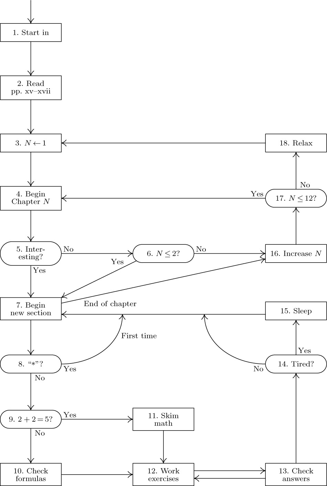

Preface
Here is your book, the one your thousands of letters have asked us
to publish. It has taken us years to do, checking and rechecking countless
recipes to bring you only the best, only the interesting, only the perfect.
Now we can say, without a shadow of a doubt, that every single one of them,
if you follow the directions to the letter, will work for you exactly as well
as it did for us, even if you have never cooked before.
— McCall’s Cookbook (1963)
The process of preparing programs for a digital computer is especially attractive, not only because it can be economically and scientifically rewarding, but also because it can be an aesthetic experience much like composing poetry or music. This book is the first volume of a multi-volume set of books that has been designed to train the reader in various skills that go into a programmer’s craft.
The following chapters are not meant to serve as an introduction to computer programming; the reader is supposed to have had some previous experience. The prerequisites are actually very simple, but a beginner requires time and practice in order to understand the concept of a digital computer. The reader should possess:
a) Some idea of how a stored-program digital computer works; not necessarily the electronics, rather the manner in which instructions can be kept in the machine’s memory and successively executed.
b) An ability to put the solutions to problems into such explicit terms that a computer can “understand” them. (These machines have no common sense; they do exactly as they are told, no more and no less. This fact is the hardest concept to grasp when one first tries to use a computer.)
c) Some knowledge of the most elementary computer techniques, such as looping (performing a set of instructions repeatedly), the use of subroutines, and the use of indexed variables.
d) A little knowledge of common computer jargon — “memory,” “registers,” “bits,” “floating point,” “overflow,” “software.” Most words not defined in the text are given brief definitions in the index at the close of each volume.
These four prerequisites can perhaps be summed up into the single requirement that the reader should have already written and tested at least, say, four programs for at least one computer.
I have tried to write this set of books in such a way that it will fill several needs. In the first place, these books are reference works that summarize the knowledge that has been acquired in several important fields. In the second place, they can be used as textbooks for self-study or for college courses in the computer and information sciences. To meet both of these objectives, I have incorporated a large number of exercises into the text and have furnished answers for most of them. I have also made an effort to fill the pages with facts rather than with vague, general commentary.
This set of books is intended for people who will be more than just casually interested in computers, yet it is by no means only for the computer specialist. Indeed, one of my main goals has been to make these programming techniques more accessible to the many people working in other fields who can make fruitful use of computers, yet who cannot afford the time to locate all of the necessary information that is buried in technical journals.
We might call the subject of these books “nonnumerical analysis.” Computers have traditionally been associated with the solution of numerical problems such as the calculation of the roots of an equation, numerical interpolation and integration, etc., but such topics are not treated here except in passing. Numerical computer programming is an extremely interesting and rapidly expanding field, and many books have been written about it. Since the early 1960s, however, computers have been used even more often for problems in which numbers occur only by coincidence; the computer’s decision-making capabilities are being used, rather than its ability to do arithmetic. We have some use for addition and subtraction in nonnumerical problems, but we rarely feel any need for multiplication and division. Of course, even a person who is primarily concerned with numerical computer programming will benefit from a study of the nonnumerical techniques, for they are present in the background of numerical programs as well.
The results of research in nonnumerical analysis are scattered throughout numerous technical journals. My approach has been to try to distill this vast literature by studying the techniques that are most basic, in the sense that they can be applied to many types of programming situations. I have attempted to coordinate the ideas into more or less of a “theory,” as well as to show how the theory applies to a wide variety of practical problems.
Of course, “nonnumerical analysis” is a terribly negative name for this field of study; it is much better to have a positive, descriptive term that characterizes the subject. “Information processing” is too broad a designation for the material I am considering, and “programming techniques” is too narrow. Therefore I wish to propose analysis of algorithms as an appropriate name for the subject matter covered in these books. This name is meant to imply “the theory of the properties of particular computer algorithms.”
The complete set of books, entitled The Art of Computer Programming, has the following general outline:
Volume 1. Fundamental Algorithms
Chapter 1. Basic Concepts
Chapter 2. Information Structures
Volume 2. Seminumerical Algorithms
Chapter 3. Random Numbers
Chapter 4. Arithmetic
Volume 3. Sorting and Searching
Chapter 5. Sorting
Chapter 6. Searching
Volume 4. Combinatorial Algorithms
Chapter 7. Combinatorial Searching
Chapter 8. Recursion
Volume 5. Syntactical Algorithms
Chapter 9. Lexical Scanning
Chapter 10. Parsing
Volume 4 deals with such a large topic, it actually represents several separate books (Volumes 4A, 4B, and so on). Two additional volumes on more specialized topics are also planned: Volume 6, The Theory of Languages (Chapter 11); Volume 7, Compilers (Chapter 12).
I started out in 1962 to write a single book with this sequence of chapters, but I soon found that it was more important to treat the subjects in depth rather than to skim over them lightly. The resulting length of the text has meant that each chapter by itself contains more than enough material for a one-semester college course; so it has become sensible to publish the series in separate volumes. I know that it is strange to have only one or two chapters in an entire book, but I have decided to retain the original chapter numbering in order to facilitate cross references. A shorter version of Volumes 1 through 5 is planned, intended specifically to serve as a more general reference and/or text for undergraduate computer courses; its contents will be a subset of the material in these books, with the more specialized information omitted. The same chapter numbering will be used in the abridged edition as in the complete work.
The present volume may be considered as the “intersection” of the entire set, in the sense that it contains basic material that is used in all the other books. Volumes 2 through 5, on the other hand, may be read independently of each other. Volume 1 is not only a reference book to be used in connection with the remaining volumes; it may also be used in college courses or for self-study as a text on the subject of data structures (emphasizing the material of Chapter 2), or as a text on the subject of discrete mathematics (emphasizing the material of Sections 1.1, 1.2, 1.3.3, and 2.3.4), or as a text on the subject of machine-language programming (emphasizing the material of Sections 1.3 and 1.4).
The point of view I have adopted while writing these chapters differs from that taken in most contemporary books about computer programming in that I am not trying to teach the reader how to use somebody else’s software. I am concerned rather with teaching people how to write better software themselves.
My original goal was to bring readers to the frontiers of knowledge in every subject that was treated. But it is extremely difficult to keep up with a field that is economically profitable, and the rapid rise of computer science has made such a dream impossible. The subject has become a vast tapestry with tens of thousands of subtle results contributed by tens of thousands of talented people all over the world. Therefore my new goal has been to concentrate on “classic” techniques that are likely to remain important for many more decades, and to describe them as well as I can. In particular, I have tried to trace the history of each subject, and to provide a solid foundation for future progress. I have attempted to choose terminology that is concise and consistent with current usage. I have tried to include all of the known ideas about sequential computer programming that are both beautiful and easy to state.
A few words are in order about the mathematical content of this set of books. The material has been organized so that persons with no more than a knowledge of high-school algebra may read it, skimming briefly over the more mathematical portions; yet a reader who is mathematically inclined will learn about many interesting mathematical techniques related to discrete mathematics. This dual level of presentation has been achieved in part by assigning ratings to each of the exercises so that the primarily mathematical ones are marked specifically as such, and also by arranging most sections so that the main mathematical results are stated before their proofs. The proofs are either left as exercises (with answers to be found in a separate section) or they are given at the end of a section.
A reader who is interested primarily in programming rather than in the associated mathematics may stop reading most sections as soon as the mathematics becomes recognizably difficult. On the other hand, a mathematically oriented reader will find a wealth of interesting material collected here. Much of the published mathematics about computer programming has been faulty, and one of the purposes of this book is to instruct readers in proper mathematical approaches to this subject. Since I profess to be a mathematician, it is my duty to maintain mathematical integrity as well as I can.
A knowledge of elementary calculus will suffice for most of the mathematics in these books, since most of the other theory that is needed is developed herein. However, I do need to use deeper theorems of complex variable theory, probability theory, number theory, etc., at times, and in such cases I refer to appropriate textbooks where those subjects are developed.
The hardest decision that I had to make while preparing these books concerned the manner in which to present the various techniques. The advantages of flow charts and of an informal step-by-step description of an algorithm are well known; for a discussion of this, see the article “Computer-Drawn Flowcharts” in the ACM Communications, Vol. 6 (September 1963), pages 555–563. Yet a formal, precise language is also necessary to specify any computer algorithm, and I needed to decide whether to use an algebraic language, such as ALGOL or FORTRAN, or to use a machine-oriented language for this purpose. Perhaps many of today’s computer experts will disagree with my decision to use a machine-oriented language, but I have become convinced that it was definitely the correct choice, for the following reasons:
a) A programmer is greatly influenced by the language in which programs are written; there is an overwhelming tendency to prefer constructions that are simplest in that language, rather than those that are best for the machine. By understanding a machine-oriented language, the programmer will tend to use a much more efficient method; it is much closer to reality.
b) The programs we require are, with a few exceptions, all rather short, so with a suitable computer there will be no trouble understanding the programs.
c) High-level languages are inadequate for discussing important low-level details such as coroutine linkage, random number generation, multi-precision arithmetic, and many problems involving the efficient usage of memory.
d) A person who is more than casually interested in computers should be well schooled in machine language, since it is a fundamental part of a computer.
e) Some machine language would be necessary anyway as output of the software programs described in many of the examples.
f) New algebraic languages go in and out of fashion every five years or so, while I am trying to emphasize concepts that are timeless.
From the other point of view, I admit that it is somewhat easier to write programs in higher-level programming languages, and it is considerably easier to debug the programs. Indeed, I have rarely used low-level machine language for my own programs since 1970, now that computers are so large and so fast. Many of the problems of interest to us in this book, however, are those for which the programmer’s art is most important. For example, some combinatorial calculations need to be repeated a trillion times, and we save about 11.6 days of computation for every microsecond we can squeeze out of their inner loop. Similarly, it is worthwhile to put an additional effort into the writing of software that will be used many times each day in many computer installations, since the software needs to be written only once.
Given the decision to use a machine-oriented language, which language should be used? I could have chosen the language of a particular machine X, but then those people who do not possess machine X would think this book is only for X -people. Furthermore, machine X probably has a lot of idiosyncrasies that are completely irrelevant to the material in this book yet which must be explained; and in two years the manufacturer of machine X will put out machine X + 1 or machine 10X, and machine X will no longer be of interest to anyone.
To avoid this dilemma, I have attempted to design an “ideal” computer with very simple rules of operation (requiring, say, only an hour to learn), which also resembles actual machines very closely. There is no reason why a student should be afraid of learning the characteristics of more than one computer; once one machine language has been mastered, others are easily assimilated. Indeed, serious programmers may expect to meet many different machine languages in the course of their careers. So the only remaining disadvantage of a mythical machine is the difficulty of executing any programs written for it. Fortunately, that is not really a problem, because many volunteers have come forward to write simulators for the hypothetical machine. Such simulators are ideal for instructional purposes, since they are even easier to use than a real computer would be.
I have attempted to cite the best early papers in each subject, together with a sampling of more recent work. When referring to the literature, I use standard abbreviations for the names of periodicals, except that the most commonly cited journals are abbreviated as follows:
CACM = Communications of the Association for Computing Machinery
JACM = Journal of the Association for Computing Machinery
Comp. J. = The Computer Journal (British Computer Society)
Math. Comp. = Mathematics of Computation
AMM = American Mathematical Monthly
SICOMP = SIAM Journal on Computing
FOCS = IEEE Symposium on Foundations of Computer Science
SODA = ACM–SIAM Symposium on Discrete Algorithms
STOC = ACM Symposium on Theory of Computing
Crelle = Journal für die reine und angewandte Mathematik
As an example, “CACM 6 (1963), 555–563” stands for the reference given in a preceding paragraph of this preface. I also use “CMath” to stand for the book Concrete Mathematics, which is cited in the introduction to Section 1.2.
Much of the technical content of these books appears in the exercises. When the idea behind a nontrivial exercise is not my own, I have attempted to give credit to the person who originated that idea. Corresponding references to the literature are usually given in the accompanying text of that section, or in the answer to that exercise, but in many cases the exercises are based on unpublished material for which no further reference can be given.
I have, of course, received assistance from a great many people during the years I have been preparing these books, and for this I am extremely thankful. Acknowledgments are due, first, to my wife, Jill, for her infinite patience, for preparing several of the illustrations, and for untold further assistance of all kinds; secondly, to Robert W. Floyd, who contributed a great deal of his time towards the enhancement of this material during the 1960s. Thousands of other people have also provided significant help — it would take another book just to list their names! Many of them have kindly allowed me to make use of hitherto unpublished work. My research at Caltech and Stanford was generously supported for many years by the National Science Foundation and the Office of Naval Research. Addison–Wesley has provided excellent assistance and cooperation ever since I began this project in 1962. The best way I know how to thank everyone is to demonstrate by this publication that their input has led to books that resemble what I think they wanted me to write.
Preface to the Third Edition
After having spent ten years developing the TeX and METAFONT systems for computer typesetting, I am now able to fulfill the dream that I had when I began that work, by applying those systems to The Art of Computer Programming. At last the entire text of this book has been captured inside my personal computer, in an electronic form that will make it readily adaptable to future changes in printing and display technology. The new setup has allowed me to make literally thousands of improvements that I’ve been wanting to incorporate for a long time.
In this new edition I have gone over every word of the text, trying to retain the youthful exuberance of my original sentences while perhaps adding some more mature judgment. Dozens of new exercises have been added; dozens of old exercises have been given new and improved answers.
 The Art of Computer Programming is, however, still a work in progress. Therefore some parts of this book are headed by an “under construction” icon, to apologize for the fact that the material is not up-to-date. My files are bursting with important material that I plan to include in the final, glorious, fourth edition of Volume 1, perhaps 15 years from now; but I must finish Volumes 4 and 5 first, and I do not want to delay their publication any more than absolutely necessary.
The Art of Computer Programming is, however, still a work in progress. Therefore some parts of this book are headed by an “under construction” icon, to apologize for the fact that the material is not up-to-date. My files are bursting with important material that I plan to include in the final, glorious, fourth edition of Volume 1, perhaps 15 years from now; but I must finish Volumes 4 and 5 first, and I do not want to delay their publication any more than absolutely necessary.
My efforts to extend and enhance these volumes have been enormously enhanced since 1980 by the wise guidance of Addison–Wesley’s editor Peter Gordon. He has become not only my “publishing partner” but also a close friend, while continually nudging me to move in fruitful directions. Indeed, my interactions with dozens of Addison–Wesley people during more than three decades have been much better than any author deserves. The tireless support of managing editor John Fuller, whose meticulous attention to detail has maintained the highest standards of production quality in spite of frequent updates, has been particularly praiseworthy.
Most of the hard work of preparing the new edition was accomplished by Phyllis Winkler and Silvio Levy, who expertly keyboarded and edited the text of the second edition, and by Jeffrey Oldham, who converted nearly all of the original illustrations to METAPOST format. I have corrected every error that alert readers detected in the second edition (as well as some mistakes that, alas, nobody noticed); and I have tried to avoid introducing new errors in the new material. However, I suppose some defects still remain, and I want to fix them as soon as possible. Therefore I will cheerfully award $2.56 to the first finder of each technical, typographical, or historical error. The webpage cited on page iv contains a current listing of all corrections that have been reported to me.
D. E. K.
Stanford, California
April 1997
Things have changed in the past two decades.
— BILL GATES (1995)

Flow chart for reading this set of books.